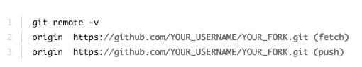
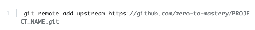
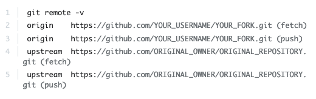

Development Workflow
Table of Contents
GitHub Workflow
Collaborating on a project
Situation 1: Cloning a remote repo to your local machine
- Make sure you've been added to the repo as a collaborator
- Clone the project repo to your computer: git clone https://github.com/...
- CD into project directory
- Go to step 3 of Daily Workflow
Situation 2: Creating a remote GitHub repo from your local files
- In your local directory, git init, touch .gitignore, then git add -A and git commit -m "Initial commit"
- Create a remote repo on GitHub
- Copy the GitHub URL
- In your project directory, enter git remote add origin YOUR-URL
- Enter git remote -v to verify
- Push the local files to GitHub; as this is the first time, set the upstream server with a '-u' tracking reference: git push -u origin main
- Add any other collaborators to your repo
- Go to step 3 of Daily Workflow
Daily workflow:
- Check out the main branch: git checkout main
- Sync the local main branch: git pull origin main
- Check out a new branch from main: git checkout -b YOUR_BRANCH_NAME
- Write and commit your code
- Push the commits to the remote repo on GitHub: git push origin YOUR_BRANCH_NAME
- Open a pull request (PR) on GitHub
- Wait for the Continuous Integration pipelines to pass
- Add a note and request a review from other developers
- Discuss the code, if necessary
- Make any requested changes and push to the branch again
- Re-request a review (within already existing PR)
- Once the PR is approved, the reviewer will merge it to the main branch and delete the completed feature branch
- Delete the completed feature branch locally, too: git branch -d YOUR_BRANCH_NAME
- Loop back to step 1 (sync local repo with origin main)
Resources
- Resolving merge conflicts
- Oh Shit, Git!?! - some bad situations, and how to get out of them (in plain English)
- Git Command Explorer
- CS50: Collaboration and Version Control with Git
- Practise GitHub workflow with GitHub Minesweeper game
- Trunk-Based Development: "A source-control branching model, where developers collaborate on code in a single branch called ‘trunk' (aka main), resisting any pressure to create other long-lived development branches by employing documented techniques. They therefore avoid merge hell, do not break the build, and live happily ever after."
An alternative collab style:
Contributing to an open source project
Unless you have write access to the repository in question, you cannot simply push something to it; your push will be denied by the server. That's where a fork comes into play. By forking someone else's repo, you get a copy to which you have write access, i.e. to which you can push your contributions.
A fork is a copy of a repository. Forking a repository allows you to freely experiment with changes without affecting the original project.
Most commonly, forks are used to either propose changes to someone else's project or to use someone else's project as a starting point for your own idea.
Typical process:
- Identify an area in an open source project that can be improved
- Fork its repo
- Make a clone of your fork on your local machine
- In that clone, make changes, run tests, create commits (possibly on a new branch), etc
- Once you're happy with your amendments to the code, make your work more presentable: tidy/squash your commits, write good commit messages that respect the style of the original repo. You may also want to rebase your branch to that of the repo author's branch, if they have pushed changes to their repo since you forked it
- Push to your fork
- Issue a pull request to the repo's author and wait for them to review it
- Push more commits to (and possibly rebase) your branch until they are satisfied with your work
- If all goes well, they will merge your pull request; your work gets integrated into their GitHub repo
- To save space on GitHub's servers, and if you don't intend to contribute to the project again any time soon, you can safely delete your fork
Keeping your fork up to date:
What happens if somebody makes an update to the original project and now your forked project is out of sync? Here's how to make sure your fork has the most up-to-date version of the original project:
- In your terminal, change directory to your forked project directory
- Enter git remote -v. You'll see the current configured remote repository for your fork. 
- Type git remote add upstream and then paste the URL you would copy from the original repository if you were to do a git clone. Press Enter. It will look like this: 
- To verify the new upstream repository you've specified for your fork, type git remote -v again. You should see the URL for your fork as origin, and the URL for the original repository as upstream. 
- Now, you can keep your fork synced with the upstream repository with a few Git commands. One simple way is to use this command from the main branch of your forked repository: git pull upstream main.
- Or you can follow another method, here: Syncing a Fork.
Resources
- Open source “Git Started Guide”
- Anatomy of an open source project (ZTM guide)
- Git upstream and downstream
Essential Git commands:
git diff: This is the comparison command in Git. Here's a tutorial on how to use git diff. (To scroll through the less program, use up and down arrows and when you've finished, press 'q' or 'ctrl + z' to exit.)
git log: The git log command shows you what changes were made to a repository, by whom, and when. You can filter the output of git log to show only the information you need to know. (See notes above on git diff command for how to use the less program.)
git revert vs git reset: Two different ways to undo commits. Here's a tutorial on how git revert works, and here's one on when to use git reset instead of git revert.
git merge vs git rebase: A tutorial on two different ways to incorporate commits from one Git branch into another.
DevOps
In progress!
Resource: 10 Best Free Online Courses to learn Agile and Scrum for Beginners in 2022